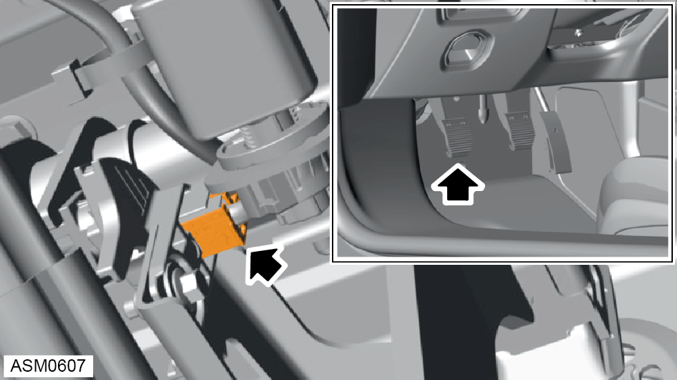
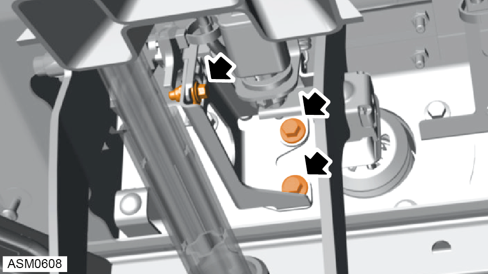
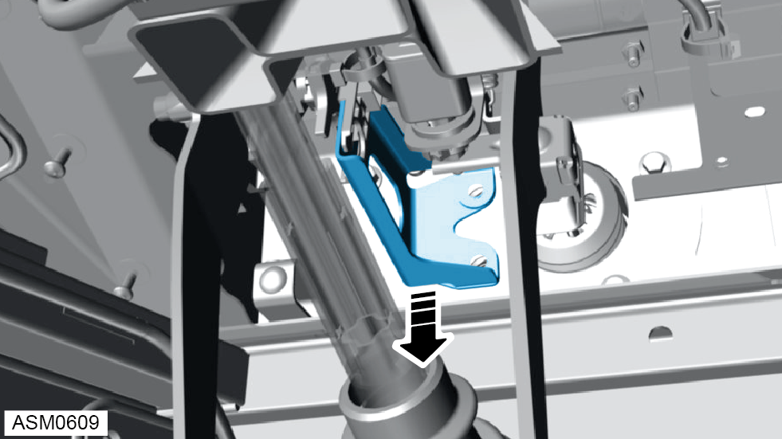
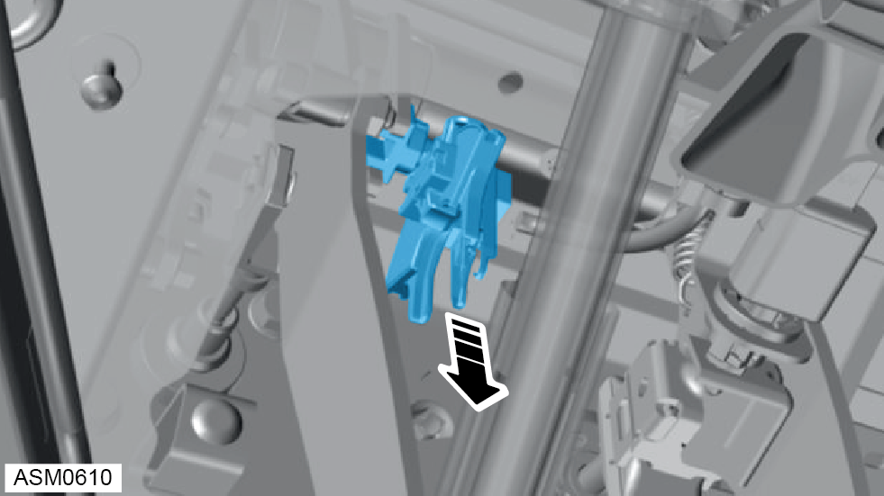

Potentiometer - Clutch Pedal
Print
Operation Code: 14.01.12-02
Removal
- Remove lower fascia panel. Refer to procedure.
- Disconnect battery. Refer to procedure.

- Disconnect harness connector from clutch potentiometer.

- Remove M8x30 bolts (x2) and nut securing clutch potentiometer bracket to vehicle. Torque 25 Nm.
- Remove M5x16 bolt, nut and washer securing clutch potentiometer to bracket. Torque 4 Nm.

- Remove clutch potentiometer bracket.

- Remove clutch potentiometer.
 CAUTION: Clutch slider spring and end cap may separate during removal.
CAUTION: Clutch slider spring and end cap may separate during removal.
Installation
- Installation is the reverse of removal procedure except for the following:
- After installation perform a diagnostic read and clear error memory using Lotus Insight tool.